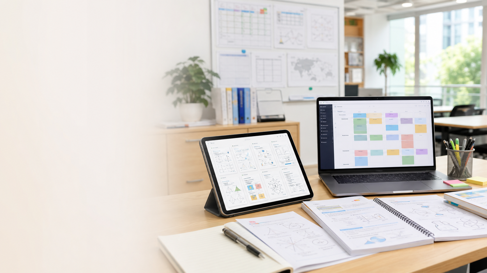

Start with the English line, check the translation, and then speak the idea back without looking.

Cambridge IGCSE study planner | 剑桥 IGCSE 复习计划
IGCSE 90-Day Plan
A bilingual revision page for Chinese-speaking students. Read the English, check the Chinese, then practice with examples, vocabulary, and a repeatable 90-day routine that turns weak topics into marks.
90 days
15 study cycles / 15 个学习循环
01
Bilingual
English + Simplified Chinese
02
Vocabulary bank
Words, command words, and examples
03
Progress tracking
Mark each day as done
04
How to use it / 使用方法
Simple enough to keep using every day.
The plan uses 3 phases and 15 six-day cycles. Every cycle repeats the same learning rhythm: map the topic, learn words, copy a model, practice alone, do one timed set, then review and teach it back.
Write the word, the meaning, the example, and the mistake. This is how weak topics become repeatable marks.
If you are stuck, write the simplest correct English. Short and clear beats blank.
The plan is built around a repeatable six-day loop so you can revise, test, and recover without guessing what to do next.
Study rule / 学习规则
Learn one thing, practice it once, mark it once, and review it once. That small loop is enough to change the way a revision day feels.
90-day route / 90天路线
Three phases. Fifteen cycles. Ninety days.
Phase 1 builds the base, Phase 2 grows skill, and Phase 3 locks in exam mode. Keep the same routine, and let the topic change instead of the method.
Phase 1 / 第 1 阶段
Build the base / 打基础
Days 1-30 are for mapping the exam, learning the command words, and creating a notebook that makes revision cleaner.
Goal / 目标
Know what the papers want before you chase speed.
先看懂题目和试卷要求，再去追速度。
Phase 2 / 第 2 阶段
Build skill / 提升能力
Days 31-60 move from notes to response patterns: explain clearly, compare properly, and use better examples.
Goal / 目标
Turn vocabulary into answers and answers into marks.
把词汇变成答案，把答案变成分数。
Phase 3 / 第 3 阶段
Exam mode / 考试模式
Days 61-90 are for timed papers, weak-topic repair, and calm review before the real exam day.
Goal / 目标
Stay calm, check the command word, and finish strong.
保持冷静，先看指令词，稳稳做完。
Vocabulary bank / 小词汇库
Words, translations, and example lines.
Search a word, then read the translation and the example sentence. This is the fastest way to build usable exam language.
Sentence frames / 句型框架
Ready-made lines for answers.
Use these when you do not know how to start. They help with essays, analysis, science explanations, and short answers.
Chinese learner tips / 中文学习者技巧
Small habits that make the page easier to use.
These are the little moves that keep Chinese-speaking students from getting stuck when the English gets heavy.